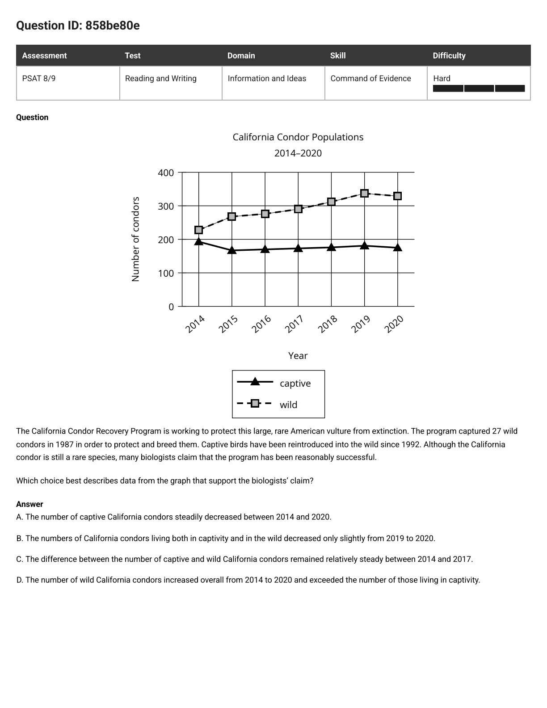
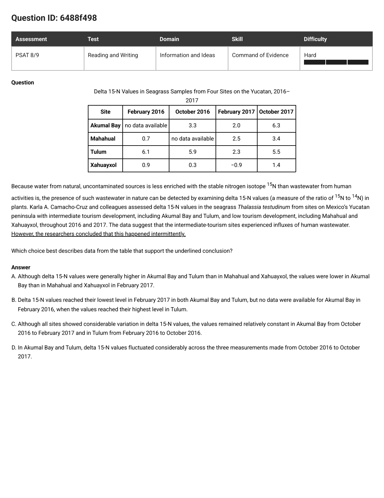
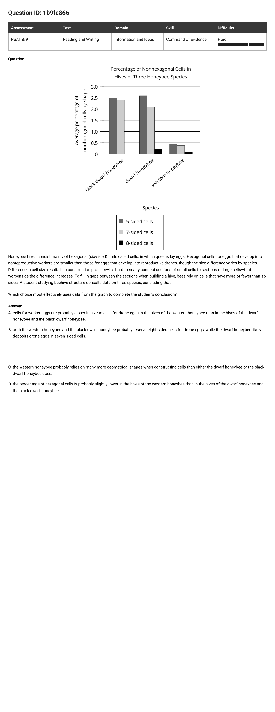
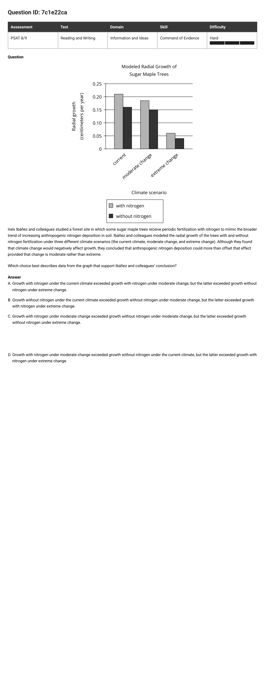
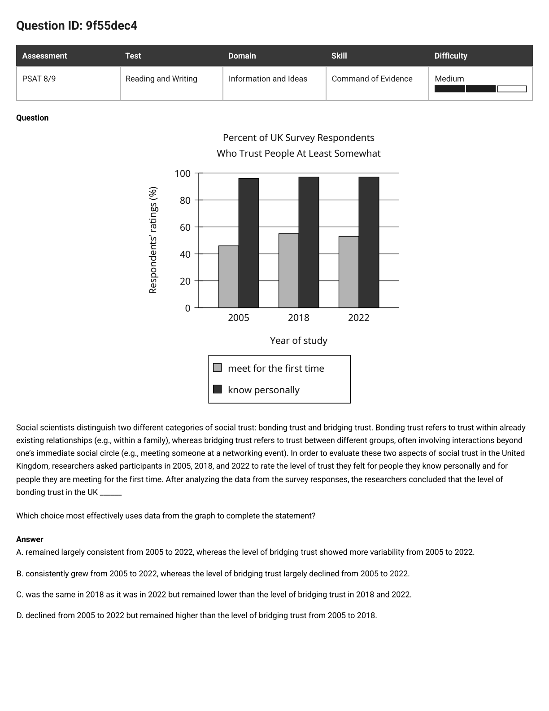
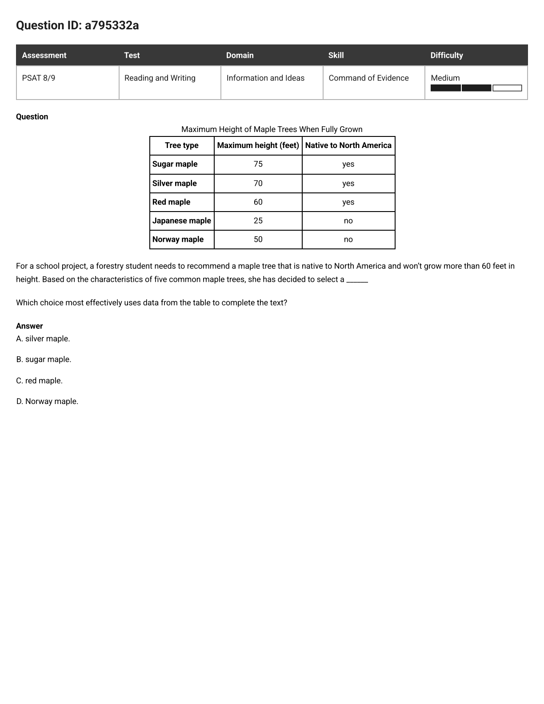
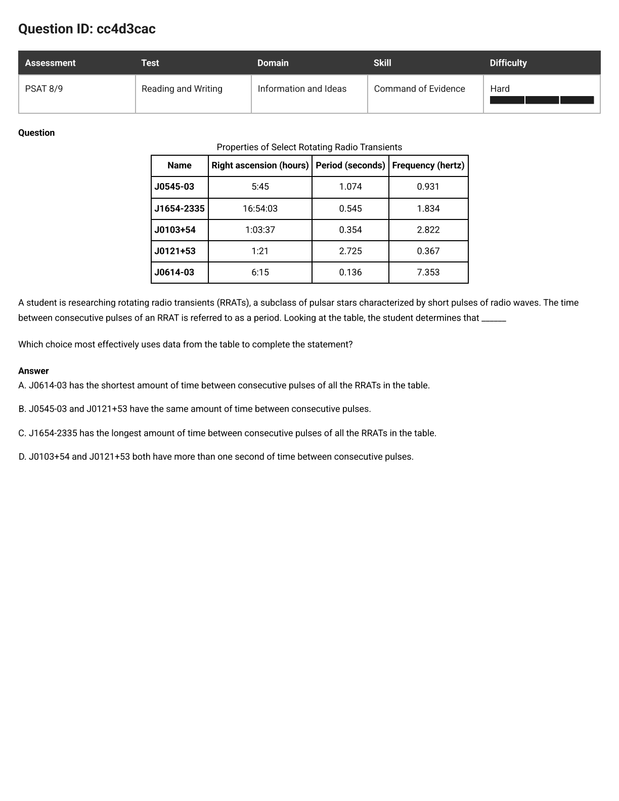
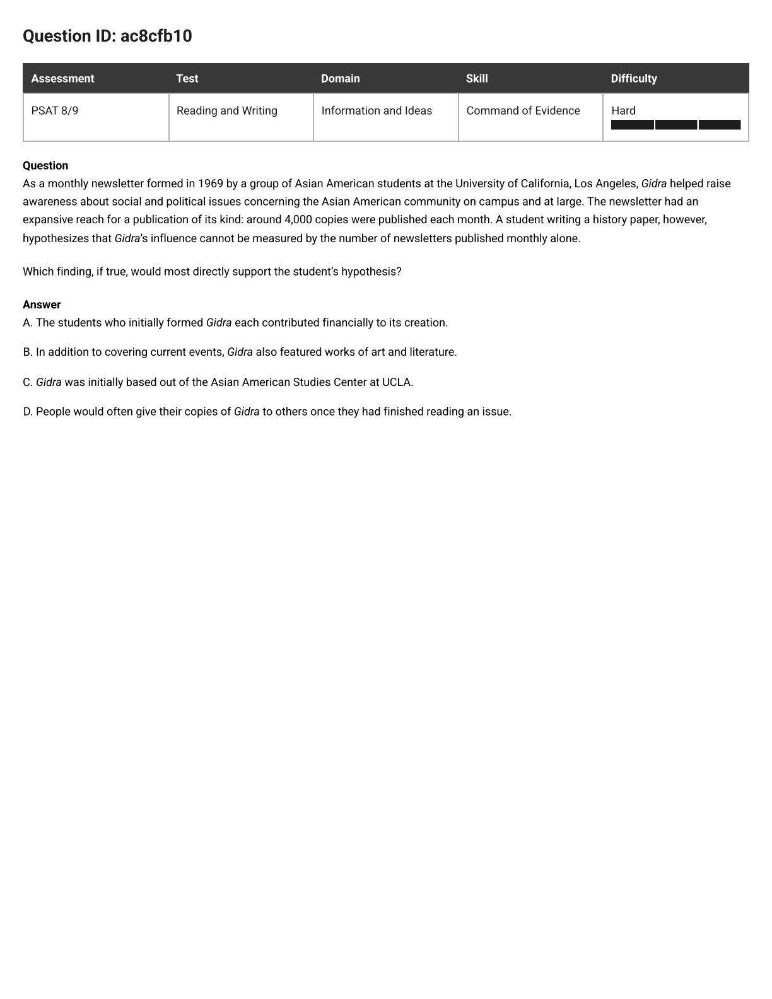

PSAT 8/9 · Command of Evidence · 8 missed questions, one model
Every question below shows a graph or a table and asks which choice the data supports. The shared slip: checking whether a choice sounds true instead of whether it proves the claim. Three steps fix all eight.
Before looking at a single number, find the sentence the data is supposed to support: the underlined conclusion, the blank to fill, or the hypothesis. Say it in your own ten words. If you can't point at the claim, you are not ready for the choices.
Rewrite the claim as a yes-or-no check on the figure: which line should climb? which group should be lowest? should the numbers bounce around or stay flat? A claim like "the program worked" becomes "the wild-bird line should rise over the years." Now you know exactly what to look for.
Take each choice number by number, word by word. A choice is right only if it passes your test — being true is not enough. The test-makers breed three trap species; learn their shapes and you will see them coming:
True-but-useless. Every number checks out — but it answers a different question than the claim asked.
Backwards. Says higher when the data says lower, says fell when it rose. One flipped word.
Half-right. Starts true, then one clause quietly breaks — a wrong year, a wrong group, a word like "constant" where the claim needed "bouncy".

The question as it appeared
The California Condor Recovery Program is working to protect this large, rare American vulture from extinction. The program captured 27 wild condors in 1987 in order to protect and breed them. Captive birds have been reintroduced into the wild since 1992. Although the California condor is still a rare species, many biologists claim that the program has been reasonably successful.
Which choice best describes data from the graph that support the biologists' claim?
In plain words: the biologists say "it worked" — which pattern in the graph would show that?
Ten words: breeding plus release brought wild condors back. Notice the claim is about the wild population recovering — not about captivity shrinking, not about one quiet year. Hold that thought; it eliminates two choices before you touch the graph.
If released birds survive and breed, wild numbers rise year after year — and a truly recovered population outnumbers the captive one. So: find the square-marked line, check it goes up from 2014 to 2020, and check it sits above the triangle line.
Wild squares: about 230 → about 330, rising nearly every year, and above the captive line from 2015 on. Every word of D checks out — and it is exactly the pattern success would produce.
D — wild condors rose overall and outnumbered captive ones.
Step 2 did the work: success has a shape (a climbing wild line), and D is the only choice describing that shape.
Fails the Match. The captive line dips once (2014→2015) then sits flat near 170–195 — that is not a "steady decrease." And even if it were, fewer captive birds alone wouldn't prove wild recovery.
T1, True-but-useless. The 2019→2020 dip is real but tiny — and one quiet year says nothing about whether the program worked. It answers "what happened last year?", not the claim.
T1, True-but-useless. A steady gap between two lines is a fact about the gap, not evidence of recovery. The claim needs growth, and C never mentions any.

The question as it appeared
Water from natural, uncontaminated sources carries less of the nitrogen form 15N than wastewater from human activities does — so scientists can sniff out wastewater by measuring delta 15-N values in seagrass. Karla Camacho-Cruz and colleagues measured seagrass at Yucatan sites with middling tourism (Akumal Bay, Tulum) and low tourism (Mahahual, Xahuayxol) through 2016–2017. The data suggest the middling-tourism sites got influxes of human wastewater. However, the researchers concluded that this happened intermittently.
Which choice best describes data from the table that support the underlined conclusion?
In plain words: the researchers say the pollution came and went — which table pattern shows coming-and-going?
Ten words: wastewater arrived in bursts, not in a steady stream. One word carries the entire question — intermittently. Circle it. Everything you do next serves that one word.
If pollution comes in bursts, the readings at the two touristy sites should jump around across the dates: high one visit, low the next, high again. Steady readings would prove the opposite. So run your finger across the Akumal Bay and Tulum rows and feel for a bounce.
| Site | Oct 2016 | Feb 2017 | Oct 2017 |
|---|---|---|---|
| Akumal Bay | 3.3 | 2.0 | 6.3 |
| Tulum | 5.9 | 2.3 | 5.5 |
"Fluctuated considerably across the three measurements" — that is exactly the pattern your finger just traced. Done.
D — the values swung up and down across the three dates.
Step 1 did the work: once intermittently is the claim, only a fluctuation can support it — and D is the only fluctuation on offer.
T3, Half-right. The first half is true (touristy sites run higher overall) — but the February 2017 detail breaks: Akumal Bay's 2.0 beats Xahuayxol's −0.9, so it was not lower than both. One false clause sinks the whole choice.
Missing-data hand-wringing. "No data available" is a hole, not evidence. There is still plenty of table left to show a bounce — a missing cell never cancels the cells you can see.
T3, Half-right — and self-defeating. "Remained relatively constant" is the opposite of intermittent; a constant stretch cannot support a coming-and-going claim. Plus it cherry-picks two quiet windows while ignoring the big swings right next to them (Akumal 2.0 → 6.3, Tulum 5.9 → 2.3).

The question as it appeared
Honeybee hives consist mainly of hexagonal (six-sided) units called cells, in which queens lay eggs. Hexagonal cells for eggs that develop into nonreproductive workers are smaller than those for eggs that develop into reproductive drones, though the size difference varies by species. Difference in cell size results in a construction problem — it's hard to neatly connect sections of small cells to sections of large cells — that worsens as the difference increases. To fill in gaps between the sections when building a hive, bees rely on cells that have more or fewer than six sides. A student studying beehive structure consults data on three species, concluding that ______
Which choice most effectively uses data from the graph to complete the student's conclusion?
In plain words: the graph never mentions cell sizes — so how can it prove anything about them?
When the conclusion is a blank, the passage hands you the reasoning chain. Here it is, link by link: (1) worker cells and drone cells differ in size; (2) bigger difference → worse construction problem → bees fill the gaps with odd-shaped (non-six-sided) cells. So the chain runs: size gap → gap-filler cells. Read it backwards and the graph can speak: fewer gap-filler cells → smaller size gap.
Running the chain backwards: the species with the fewest gap-filler cells has the smallest worker/drone size gap. Compare totals: black dwarf ≈ 2.5 + 2.4, dwarf ≈ 2.6 + 2.1 + 0.2, western ≈ 0.45 + 0.4 + 0.1. Western wins by a mile — its bars barely leave the floor.
"Worker-egg cells are probably closer in size to drone-egg cells in the western honeybee" — smallest filler → smallest gap. The graph never shows a ruler, but the chain turns bar heights into a size conclusion.
A — western worker and drone cells are closest in size.
Step 1 did the work: without the passage's chain, the bars are just bars. The model turns "fewest odd cells" into "smallest size difference."
Text-trap. The passage says eggs go into hexagonal cells; the odd-shaped ones are just gap filler. Any choice parking eggs in 7- or 8-sided cells contradicts the text — the graph can't rescue it. Always check the choice against the passage too, not only the figure.
Exaggeration. All three species use the same shapes (5-, 7-, and 8-sided; black dwarf just shows no 8-sided bar). "Many more" is doing all the lying — one-word upgrades like this are a favorite trap.
T2, Backwards. Hives are mainly hexagonal, so fewer odd cells means more hexagonal ones. Western has the fewest odd cells, so its hexagonal share is the highest — D says lowest.
Same model, fresh figures. For each one: state the claim in ten words, name the test, then match. Open the reveal only after you've picked — and check you can name the trap species on every wrong choice.
7c1e22ca · Hard · tree growth with and without nitrogen

Researchers concluded that extra nitrogen can make up for climate harm to tree growth when the change is moderate, but not when it is extreme. Which choice describes data supporting that conclusion?
D. Step 3 did the work — and this is the purest T1 trap in the set: A, B, and C are all true about the graph, but none runs the comparison the conclusion needs (no-nitrogen-now versus nitrogen-later, under both moderate and extreme change). Only D tests the claim, and it passes (~0.18 beats ~0.16, but ~0.16 beats ~0.06).
9f55dec4 · Medium · bonding vs bridging trust, 2005–2022

Bonding trust = trust in people you know; bridging trust = trust in strangers. After analyzing the survey data, the researchers concluded that the level of bonding trust in the UK ______
Which choice most effectively uses data from the graph to complete the statement?
A. Step 2 did the work — steady-versus-bouncy across the years: bonding runs ~96 → ~97 → ~97 (flat), bridging runs ~46 → ~55 → ~53 (a hump). B invents a climb, C flips the order (bonding towers over bridging), D invents a decline.
a795332a · Medium · maple table, two constraints

A student needs a maple that is native to North America AND stays at or under 60 feet. Which one meets both?
C, red maple. Step 2 did the work — filter twice: silver (70 ft) and sugar (75 ft) fail the height test, Norway fails the native test. Only the red maple (60 ft, yes) survives both filters. Two-condition claims need two passes.
cc4d3cac · Hard · pulsar table, define first

A pulsar's period is the time between consecutive pulses. Looking at the table, which statement about the listed RRATs is correct?
A. Step 1 did the work — the passage defines period as time-between-pulses, so "shortest time" means the smallest period number: 0.136 (J0614-03). B compares 1.074 with 2.725 (not equal), C misses J0121+53's 2.725 (the true longest), D trips on J0103+54's 0.354. Definitions first, scanning second.
ac8cfb10 · Hard · the finding variant (same model, text-only card)

Gidra, a 1969 Asian American student newsletter, printed ~4,000 copies a month. A student hypothesizes its influence can't be measured by copies alone. Which finding would most directly support that?
D. Step 2 did the work — "influence beyond copies" is proven by readers beyond copies, and only passed-along copies create those. A (funding), B (contents), and C (address) are all plausibly true background that never touch the copies-versus-readers test: T1, three times over.